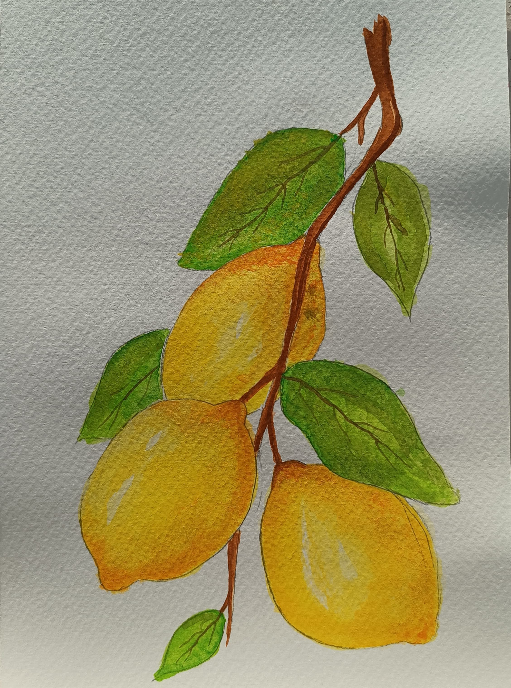
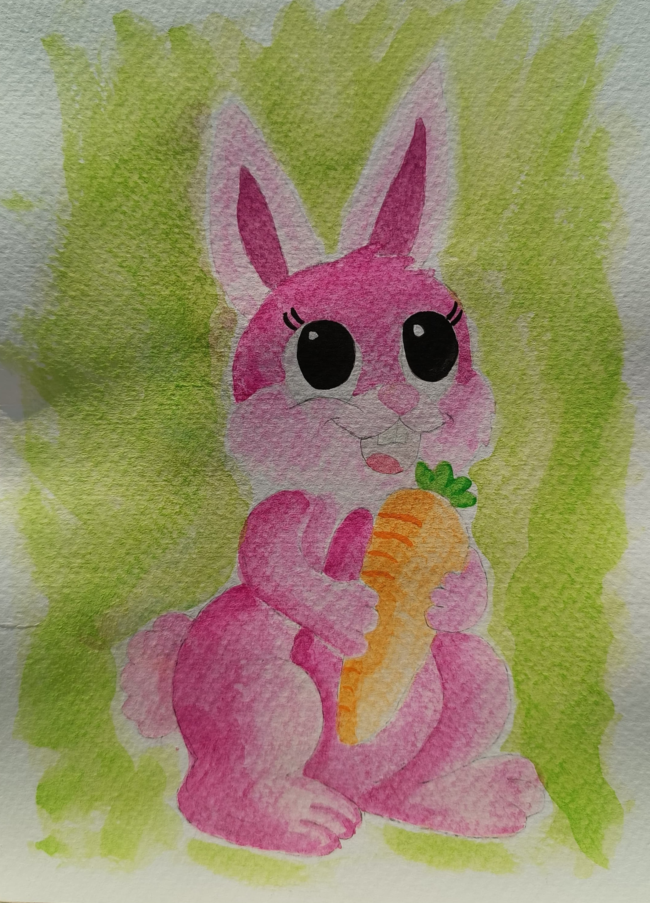
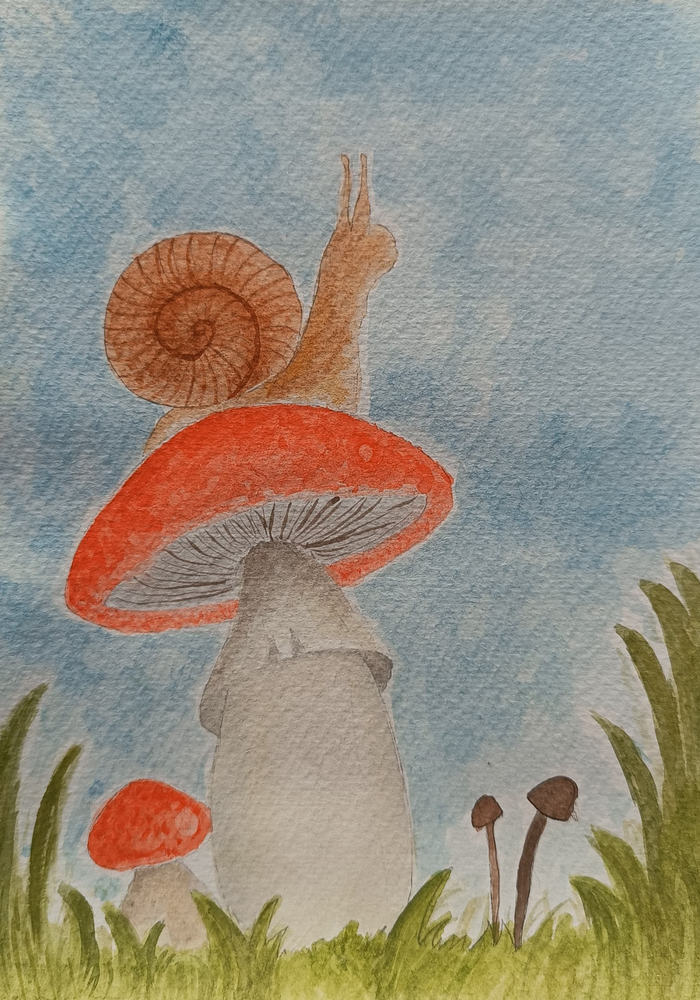
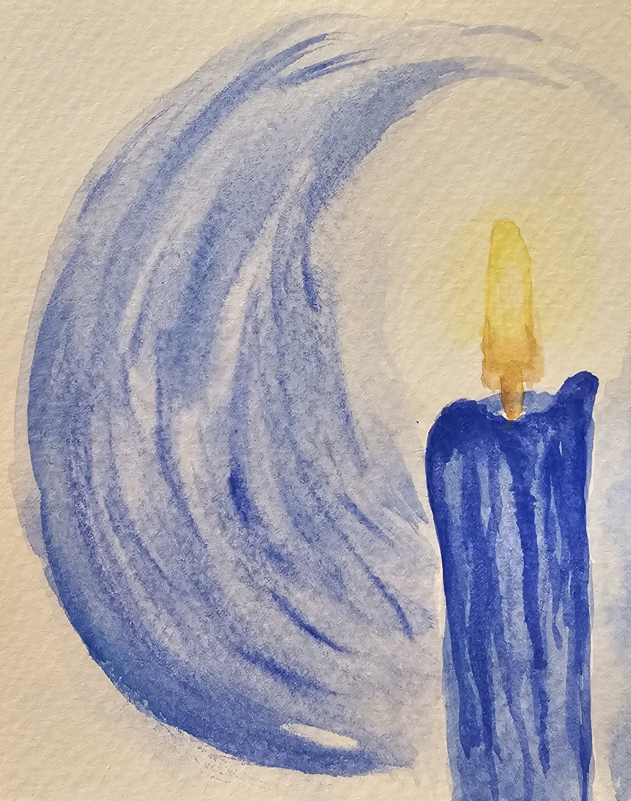

↠Back to Home

🋠Watercolor Lemons
Golden drops of sunlight, lemons carry both brightness and bite — a tender balance painted in cheerful yellows and soft shadows.

🇠Watercolor Rabbit
A quiet soul of the forest, the rabbit is all softness and stillness — as if painted from a breath of wind and a pulse of wonder.

ğŸ„🌠Watercolor Mushroom & Snail
The mushroom stands like a fairy tale in mossy silence, while the snail glides nearby — patient, delicate, and dreaming of rain.

🕯️ Burning Candle
A flame that dances but never strays, the candle is a quiet witness to time — melting slowly, as if whispering secrets to the dark.